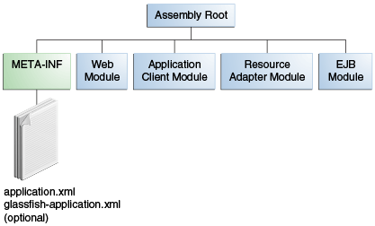

|
Plataforma Java, Edición Empresarial (Java EE) 8 El Tutorial de Java EE |
| Anterior | Siguiente | Contenidos |
Una aplicación Java EE se entrega en un archivo Java Archive (JAR), un archivo Web Archive (WAR) o
un archivo Enterprise Archive (EAR). Un archivo WAR o EAR es un archivo JAR (.jar)
estándar con una extensión .war o .ear. El uso de archivos y módulos
JAR, WAR y EAR hace posible ensamblar varias aplicaciones Java EE diferentes utilizando algunos de
los mismos componentes. No se necesita codificación adicional; es sólo cuestión de ensamblar (o
empaquetar) varios módulos Java EE en archivos Java EE JAR, WAR o EAR.
Un archivo EAR (ver Figura 5-1) contiene módulos Java EE y,
opcionalmente, descriptores de implementación. Un descriptor de implementación, un documento XML
con una extensión .xml, describe la configuración de implementación de una
aplicación, un módulo o un componente. Debido a que la información del descriptor de
implementación es declarativa, se puede cambiar sin necesidad de modificar el código fuente. En
tiempo de ejecución, el servidor Java EE lee el descriptor de implementación y actúa sobre la
aplicación, módulo o componente en consecuencia.
La información de implementación se especifica más comúnmente en el código fuente mediante anotaciones. Los descriptores de implementación, si están presentes, anulan lo que se especifica en el código fuente.

Los dos tipos de descriptores de implementación son Java EE y tiempo de ejecución. Un descriptor
de implementación de Java EE se define mediante una especificación de Java EE y se puede utilizar
para configurar los valores de implementación en cualquier implementación compatible con Java EE.
Se utiliza un descriptor de implementación en tiempo de ejecución para configurar parámetros
específicos de implementación de Java EE. Por ejemplo, el descriptor de implementación en tiempo
de ejecución de el Servidor GlassFish contiene información como la raíz de contexto de una aplicación
web, así como los parámetros específicos de implementación de el Servidor GlassFish, como las
directivas de almacenamiento en caché. Los descriptores de implementación en tiempo de ejecución
de el Servidor GlassFish se denominan glassfish-`moduleType.xml` y se encuentran en el
mismo directorio META-INF que el descriptor de implementación de Java EE.
Un módulo Java EE consta de uno o más componentes Java EE para el mismo tipo de contenedor y, opcionalmente, un descriptor de despliegue de componente de ese tipo. Un descriptor de despliegue de módulo de Enterprise Bean, por ejemplo, declara atributos de transacción y autorizaciones de seguridad para un Enterprise Bean. Un módulo Java EE se puede implementar como módulo autónomo.
Los módulos Java EE son de los siguientes tipos:
Módulos EJB, que contienen archivos de clase para beans empresariales y, opcionalmente, un
descriptor de despliegue EJB. Los módulos EJB se empaquetan como archivos JAR con una
extensión .jar.
Módulos web, que contienen archivos de clases de servlet, archivos web, archivos de clases de
soporte, archivos GIF y HTML y, opcionalmente, un descriptor de implementación de aplicaciones
web. Los módulos web se empaquetan como archivos JAR con una extensión .war
(archivo web).
Módulos de cliente de aplicación, que contienen archivos de clase y, opcionalmente, un
descriptor de implementación de cliente de aplicación. Los módulos de cliente de la aplicación
se empaquetan como archivos JAR con una extensión .jar.
Módulos de adaptador de recursos, que contienen todas las interfaces, clases, bibliotecas
nativas de Java y, opcionalmente, un descriptor de despliegue de adaptador de recursos.
Juntos, implementan la arquitectura del conector (consulte
Arquitectura de los conectores de JavaEE) para un EIS en
particular. Los módulos de adaptador de recursos se empaquetan como archivos JAR con una
extensión .rar (archivo de adaptador de recursos).
| Anterior | Siguiente | Contenidos |